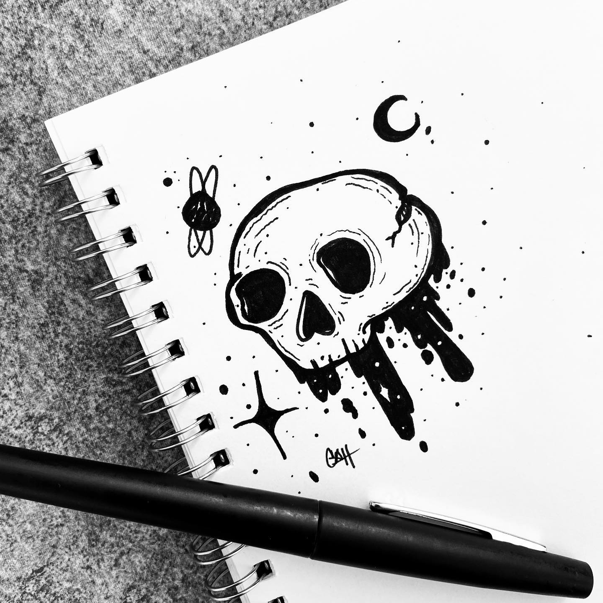
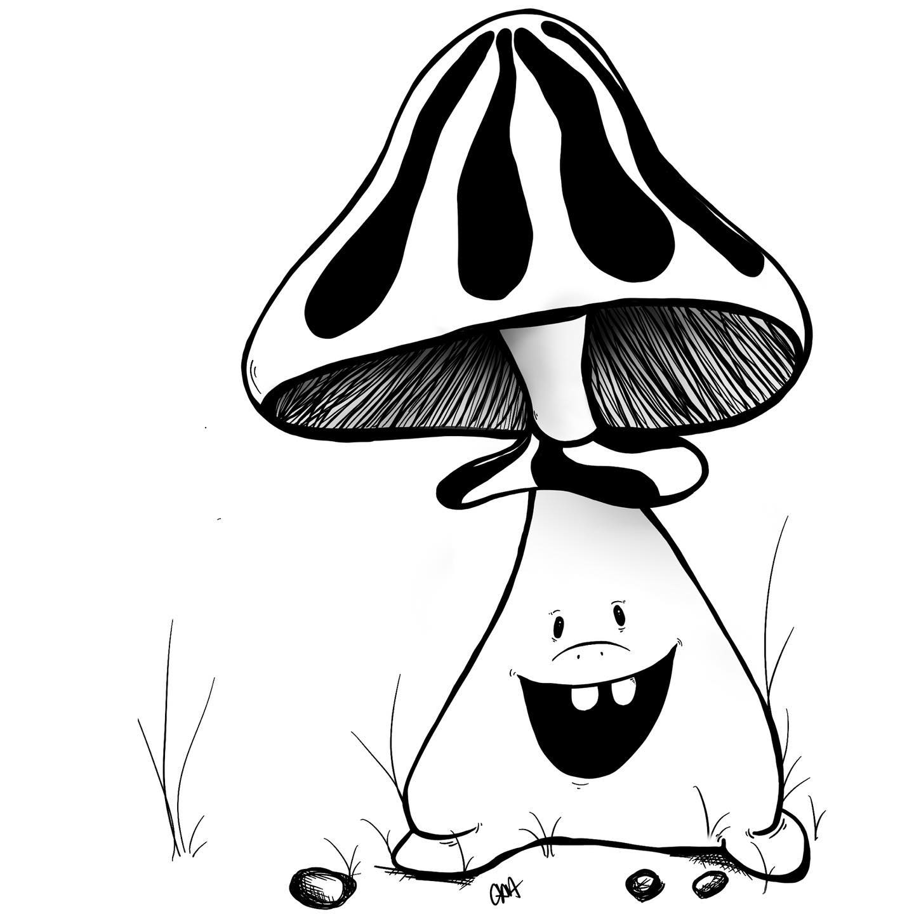
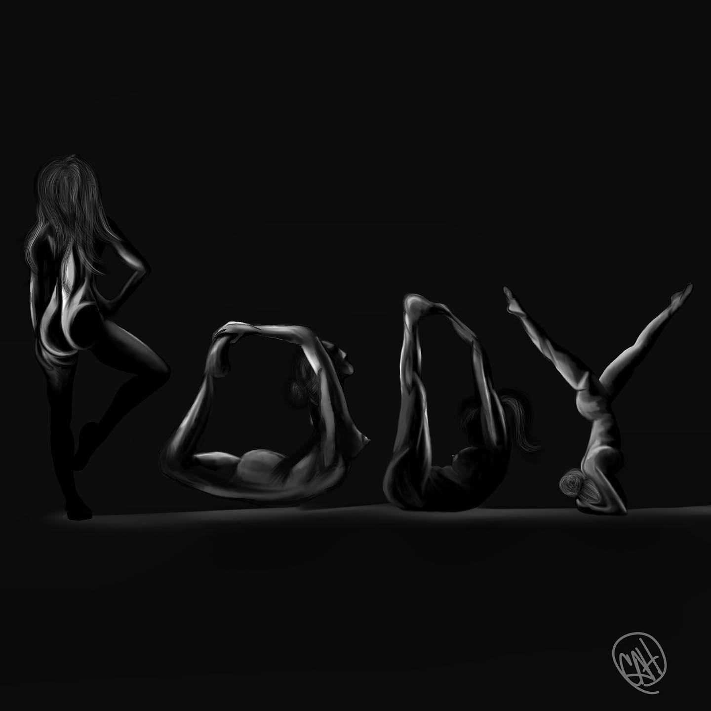
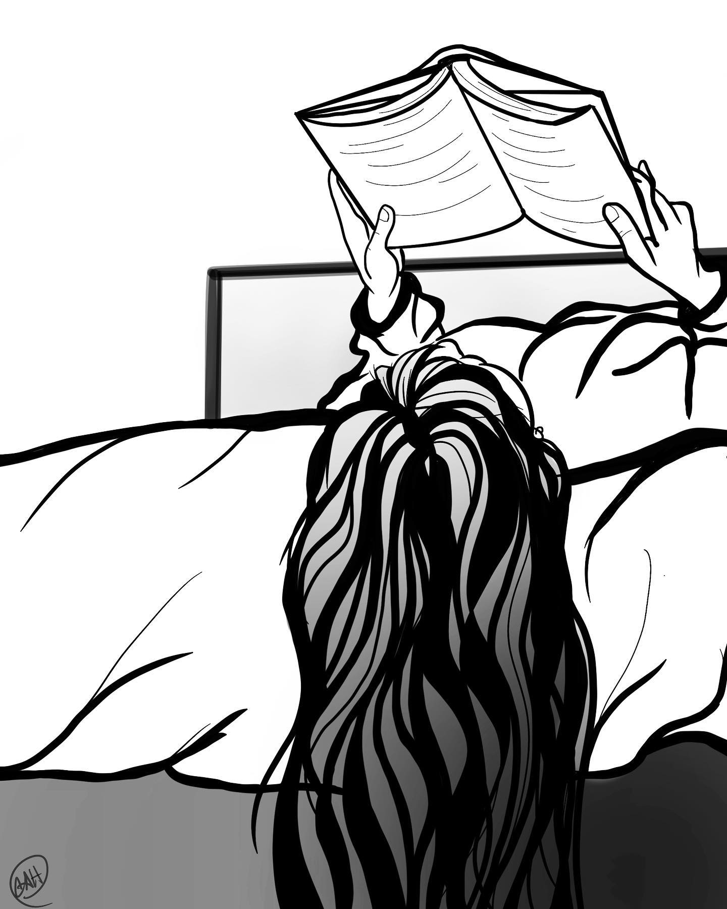

About Our Founder
"I was raised by an artist, and for as long as I can remember, creating has been a part of my roots. I started a doodle business, sending black line drawings in the mail to my friends and family. What began as the simple concept of bringing joy to others through accessible art, has evolved into a full blown business doing what I love. I left my office job in 2020 to pursue my passion of creating art. In my small shop in Columbus, Ohio, you will find featured artwork from indie artists around the country. I wanted to create a space where artists could display their work without any upfront cost. The Daily Doodle Art is all about artists supporting artists. Many cups of coffee and skull doodles later, I am proud of the evolution of both the company and the community." Chelsea Caslow Chelsea's Gallery
The shop is always evolving, with a wide variety of high quality original artwork, prints, stickers, and more from indie artists across the U.S.
Shop now



